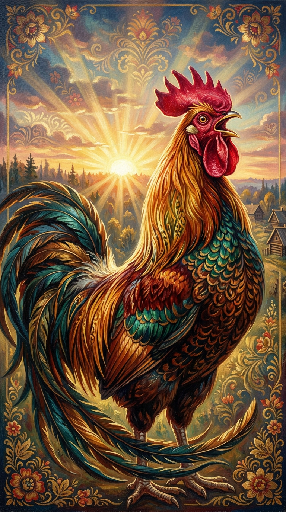

01
Циркадный гангстер
Петухи кукарекают по внутренним часам, а не от света. Учёные из Нагои выключили день — петухи всё равно орали в 4 утра.
Год петуха · 4715 лет на службе у рассвета
Восемь пород, одна анатомия, бесконечный кукарек. Сайт о тех, кто будит солнце пинком в небо.

§ 01 · Манифест
Тысячи лет до будильника у человечества был один интерфейс пробуждения — кочет на заборе. Не вежливое «доброе утро», а боевое «ПОДЪЁМ».
Петух — это не курица с короной. Это оратор, монарх и метроном фермерского космоса. Он не поёт — он командует временем.
Этот сайт — присяга в верности кочету. Здесь нет KPI, здесь есть гребень, бородка, шпоры и шесть утра.
§ 02 · Анатомия
Тычь курсором в подписи. Каждая часть — не просто пёрышко, а инструмент доминирования над двором.
Каждая деталь — отдельный пресс-релиз. Гребень — статус, шпоры — устав, косицы — мода. Тычь в точку, чтобы узнать.
§ 03 · Породы
От русского Орловского с бакенбардами до итальянского Леггорна, который сделал из яиц промышленность. Каждый — со своим характером.
§ 04 · Факты
Петухи кукарекают по внутренним часам, а не от света. Учёные из Нагои выключили день — петухи всё равно орали в 4 утра.
Крик кочета громче бензопилы. Чтобы не оглохнуть, у петуха при открытии клюва автоматически перекрывается слуховой канал.
Петухи видят ультрафиолет. Для них куры выглядят светящимися — гребень светит как неоновая вывеска «Open».
Размер и яркость гребня — это публичный статус. Петух с тусклым гребнем не имеет права петь раньше альфы. Серьёзно.
У петуха более 30 различных голосовых сигналов: «еда», «хищник в небе», «хищник по земле», «куры, я тут красив» — отдельные звуки.
Все домашние куры — потомки красной джунглевой курицы Юго-Восточной Азии. Одомашнили её ~8 000 лет назад. Дольше, чем кошку.
Петух — национальный символ Франции, Португалии и Кении. В России — символ зари, оберег от пожара и хранитель курятника.
Молодой петух начинает кукарекать в 4–5 месяцев. Это маркер половой зрелости — у людей это называется «пубертат», у петухов — «карьера».
§ 05 · Кукарекомер
Каждый клик = один кукарек. Кукареки сохраняются в твоём браузере и суммируются в глобальный счётчик сессии. Поставь рекорд.
§ 06 · Тест
5 вопросов. В конце узнаешь свою породу и насколько ты опасен для двора.
§ 07 · Зал славы
Португальский петух из легенды о невиновном пилигриме. Спас человека от виселицы, прокричав с обеденного блюда. Национальный символ.
Главный герой средневекового «Романа о Лисе» и пьесы Ростана. Поэт, проповедник, певец зари. Считал, что солнце встаёт от его крика.
Громогласный мультяшный леггорн из Looney Tunes (1946). «I say, I say, son!» — стандарт самцовости в южноамериканском исполнении.
Колорадский петух прожил 18 месяцев без головы (1945–47). Хозяин кормил его пипеткой. Феномен изучали в университете Юты.
Русская народная классика. Лиса, голос золотой, окно теремка. Архетип всех русских петухов разом: красавец, но доверчивый.
Не петух, а лого — но именно французский галльский петух носит трико на каждом олимпийце Франции с 1882 года. Спортсмен поневоле.